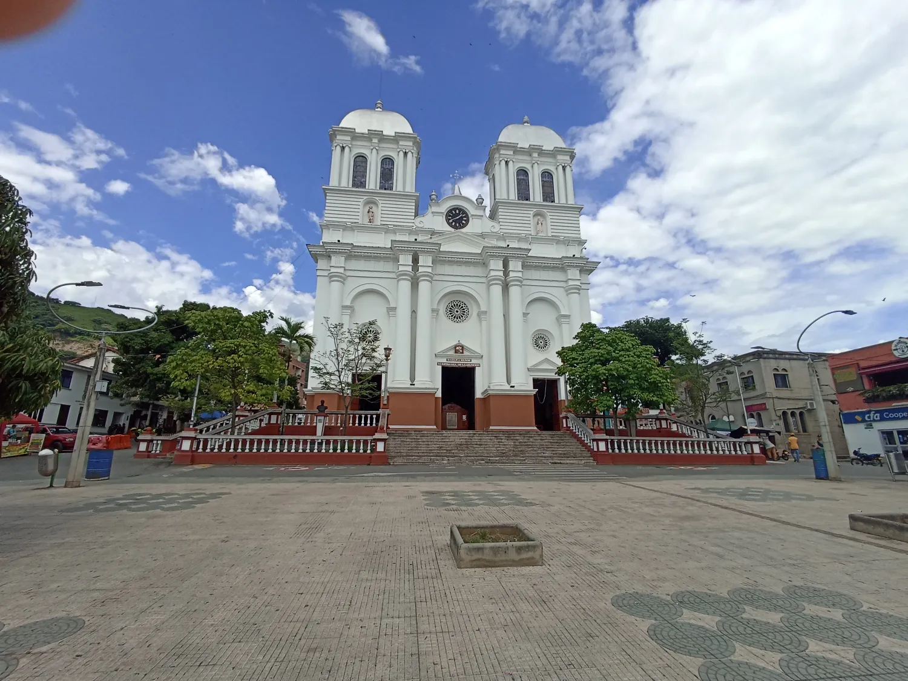
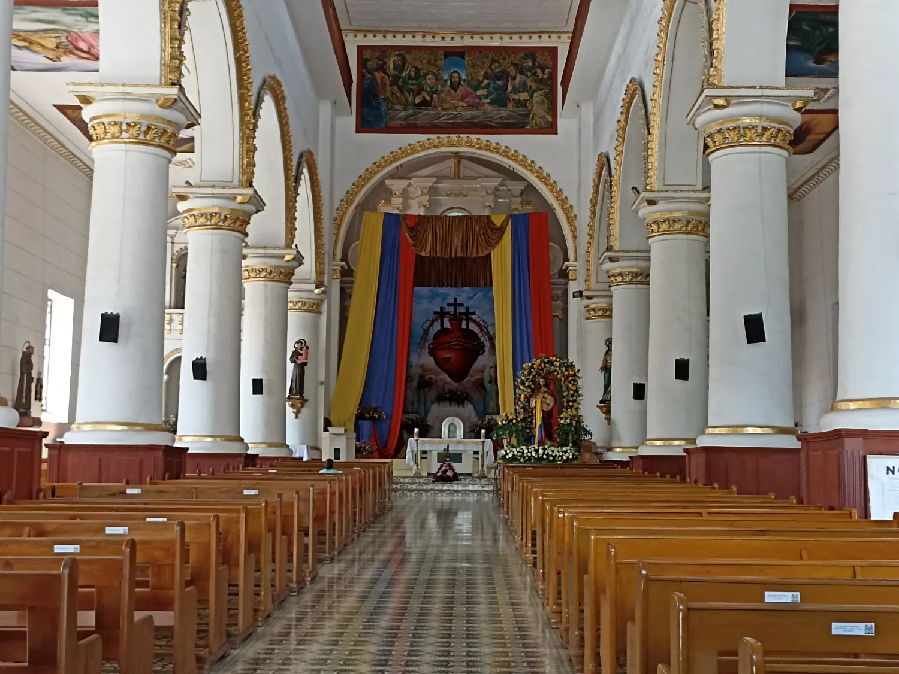
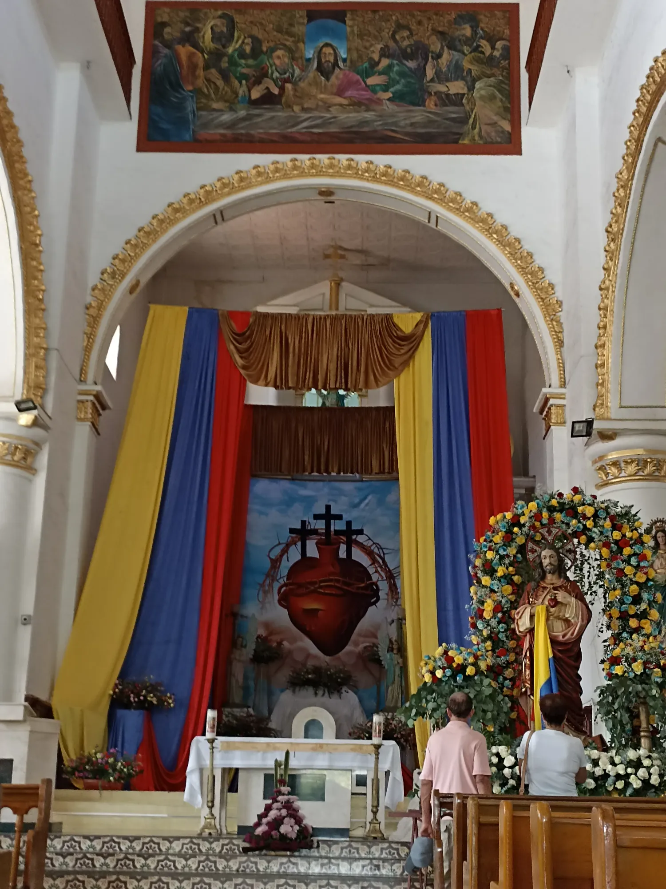
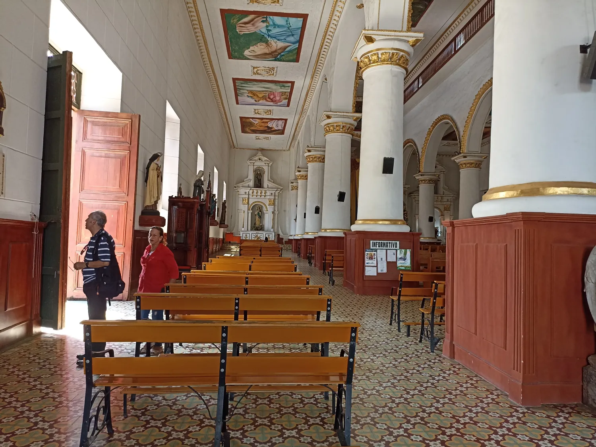
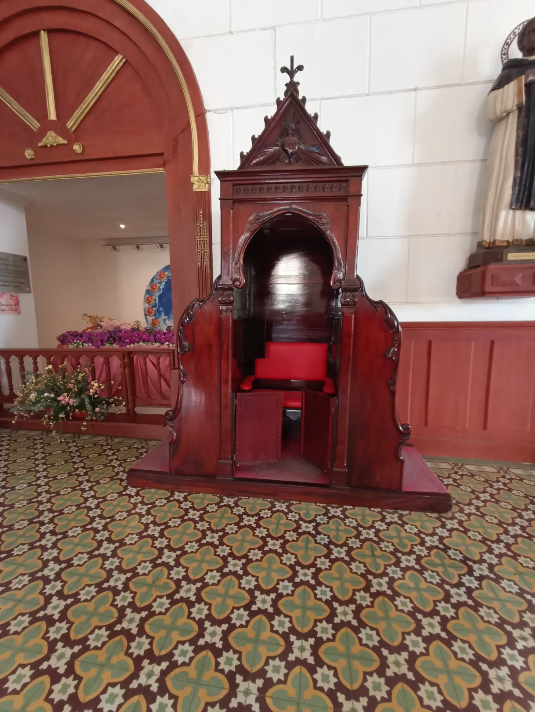
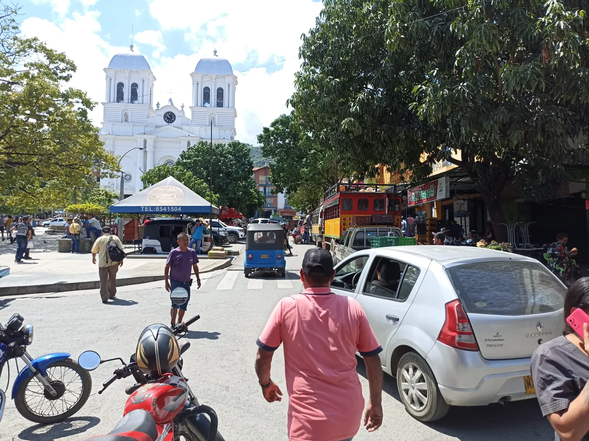
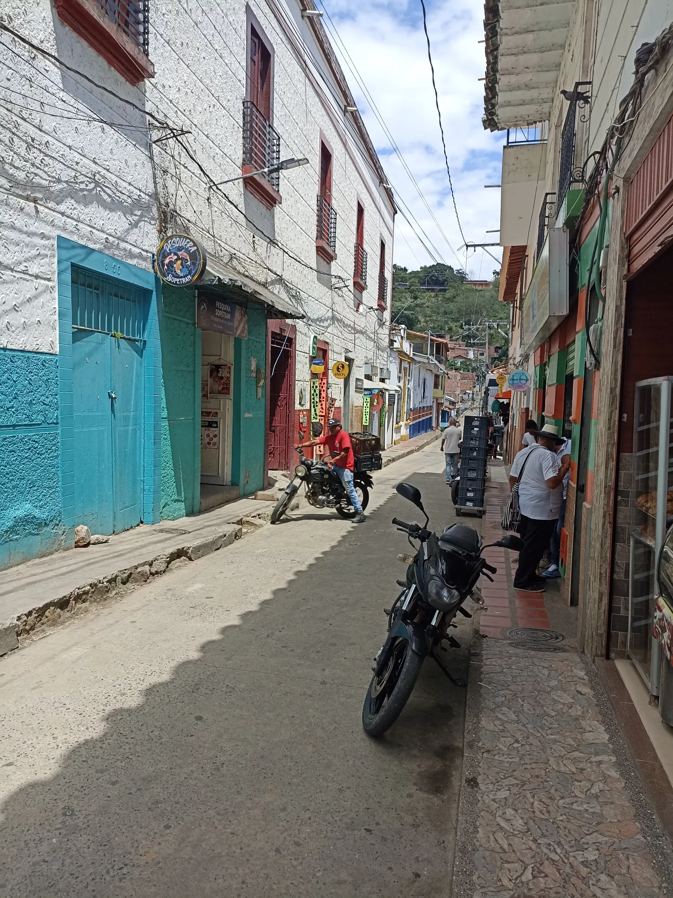
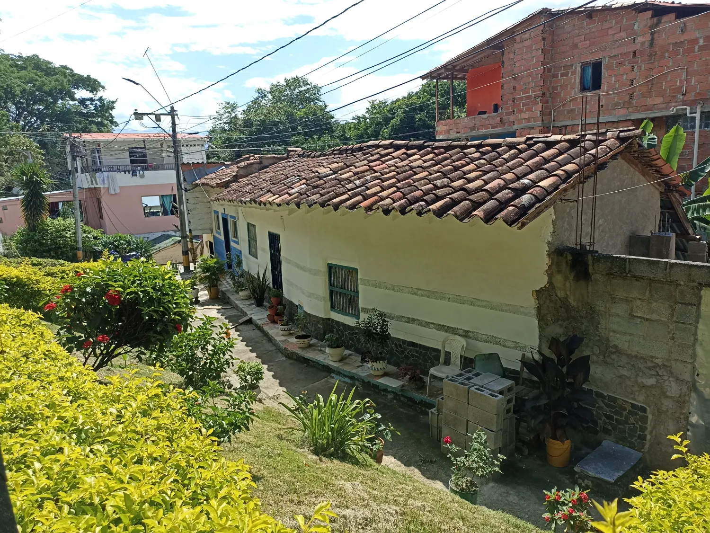
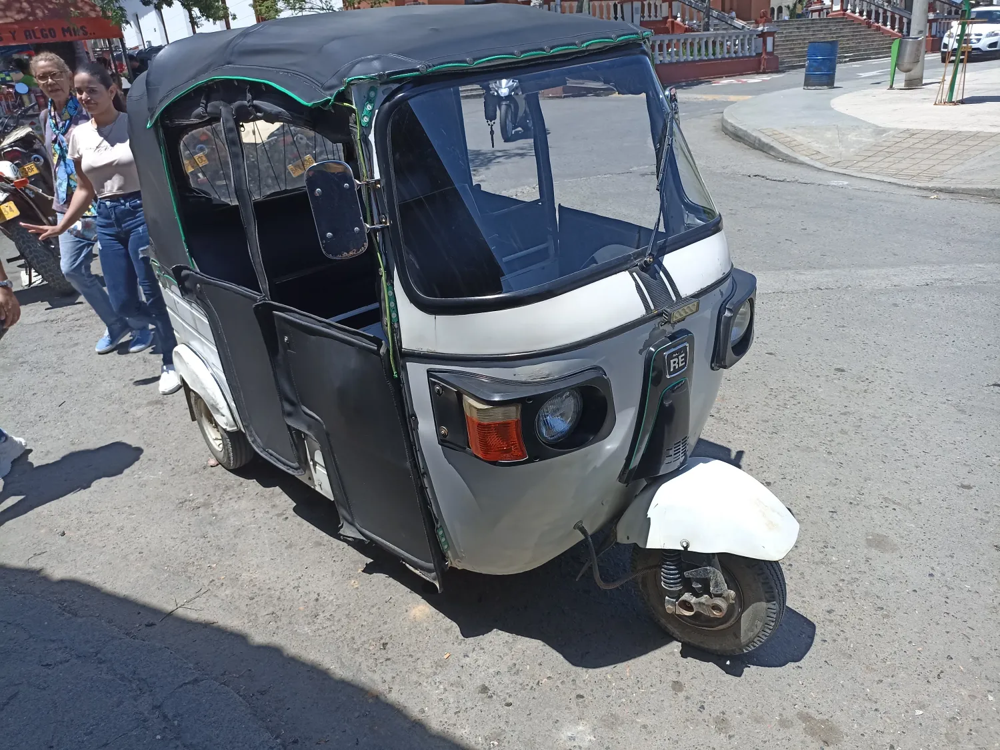

«Solo los que vagan encuentran nuevos caminos»

Conocido como "el pueblo frutero de Colombia" y no es para menos, aquí se
cultiva todo tipo
de frutas y verduras. A una hora de la ciudad de Medellín, por la doble calzada vía Urabá se encuentra
este cálido
terruño antioqueño. Habitado antes de la conquista española por comunidades indígenas nutabes y
tahamies, fundado
en 1616 por Francisco Herrera y Campuzano y erigido municipio en 1814.
Sopetrán no desentonaba con la tradición montañera, en su parque principal se levanta la hermosa
Basílica menor de Nuestra Señora de
Asunción, una monumental obra neoclásica, conformada por dos torres de 28 metros de alto
cada una, cercado por un mercadillo de
locales que ofrecen todo tipo de productos.





Es un hervidero literal, un sol sofocante que no da tregua ni descanso, los campesinos que se aglutinan provenientes de las veredas para proveerse de alimentos, medicinas y elementos para labrar la tierra, bares y cantinas atestados de nativos y foráneos desmarcándose del inclemente bochorno, moto taxistas por doquier, con sus ires y venires, un ajetreo propio de un comercio avasallador y demandante.
El "frutero" de Antioquía es una mezcla de construcciones de bahareques, adobes y hormigón, bendecido por una tierra fértil y una comunidad pujante y trabajadora.



Sopetran celebra las Fiestas de las Frutas, que rinde homenaje a sus riquezas naturales. Durante cuatro días la ciudad ofrece un gran espectáculo para disfrutar de las vacaciones en familia. El programa de actividades contempla actuaciones musicales, cabalgatas, muestra gastronómica y encuentros deportivos. En las presentaciones musicales participan orquestas nacionales e internacionales. Destaca el “Desfile de Silletas con Frutas” por su colorido y espectacularidad.